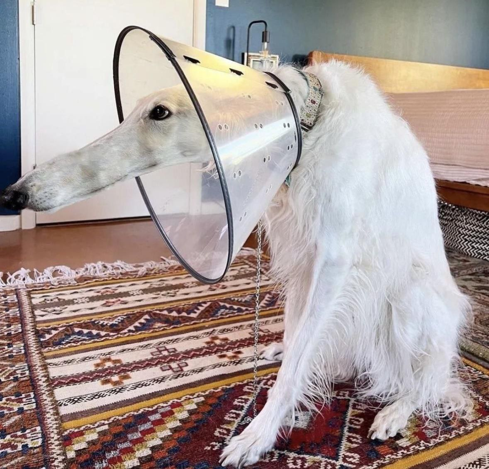

Існує багато видів лікування раку. Деяким людям з раком підходять лише одні методи лікування.
Але більшості людей підходять комбіновані методи лікування, такі як хірургічне втручання з хіміотерапією та променевою терапією.
Види лікування, які ви отримаєте, залежатимуть від типу раку та його запущеності.
Щоб дізнатися більше про те, як лікуються конкретні види раку, перегляньте інформацію про лікування раку у дорослих та дітей .
Наш список питань, які слід поставити лікарю щодо лікування, може допомогти вам поговорити з ним та дізнатися більше про варіанти лікування.
Хіміотерапія працює шляхом знищення або зупинки росту ракових та інших швидкозростаючих клітин
Гормональна терапія – це лікування, яке уповільнює або зупиняє ріст раку молочної залози та простати, для росту якого потрібні гормони.
Гіпертермія – це вид лікування, при якому тканини тіла нагріваються, щоб допомогти пошкодити та знищити ракові клітини.
MRTMRTMRTMRTMRTMRTMRTMRTMRTMRTMRTMRTMRTMRTMRTMRT
VirusVirusVirusVirusVirusVirus VirusVirus Virus
BacteriaBacteriaBacteriaBacteriaBacteriaBacteria BacteriaBacteria Bacteria
RadiographyRadiographyRadiographyRadiographyRadiographyRadiographyRadiographyRadiographyRadiographyRadiographyRadiographyRadiographyRadiographyRadiographyRadiographyRadiography
Underline
| #1 | Orys |
| #2 | essho kotiska |